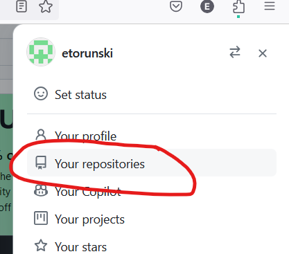
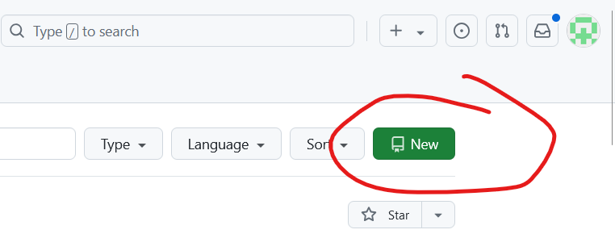
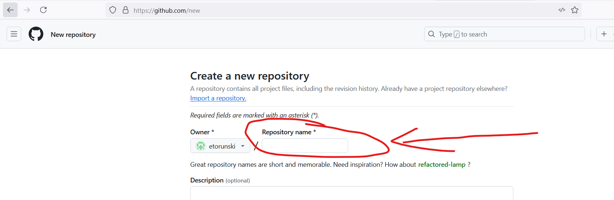
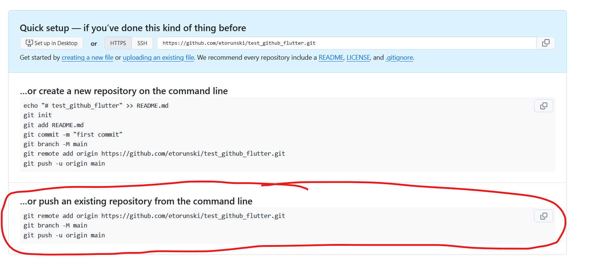

We learned how to share a project on Github using Android Studio. Look at Week 2's content for a reminder. However today we will cover how to do it using the command line.
Create a new Flutter project, and let's call it "test_github_flutter". Once you are done, you should have a project that compiles and shows a Text widget just showing "You have clicked the button X times".
Open a Terminal in AndroidStudio in your new project. At the command line, type: git init. This will initialize the files required for git. Now if you look at your files in the Project window, you should see that all your filenames are in red, meaning that they are not on the git tracking list.
In the terminal, type git status. This will tell you the same thing, that there a whole bunch of untracked files.
To add files to the tracking list, type: git add . This will add all files in the current directory.
Once you type this command, you will see that all of your files in the project window turn green.
If you type git status in the terminal, you will see the same thing that there are uncommitted files in your directory.
This just means that there is no previous version of the file so you cannot do a rollback.
To commit from the Terminal, type: git commit -am "Initial Commit"
The parameters -am mean (a) add the file to the index for commit, and (m) the commit message in quotation marks. Once you run this command, you will see that all your filenames in your project window, the filenames all have a black font colour.
Log in to Github using your account credentials. Then click on the menu in the top right and select "your repositories"

Then click on the "New" button:

Then give your repository a name (test_github_flutter):

Then scroll to the bottom of the page and click "Create Repository".The next page gives you instructions on how to transfer your repository to github:

The first line tells git what the URL is to send your code to.